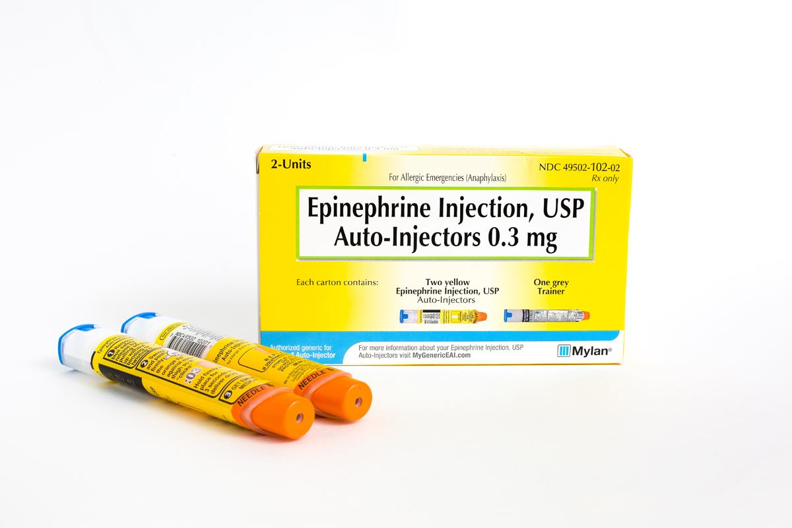
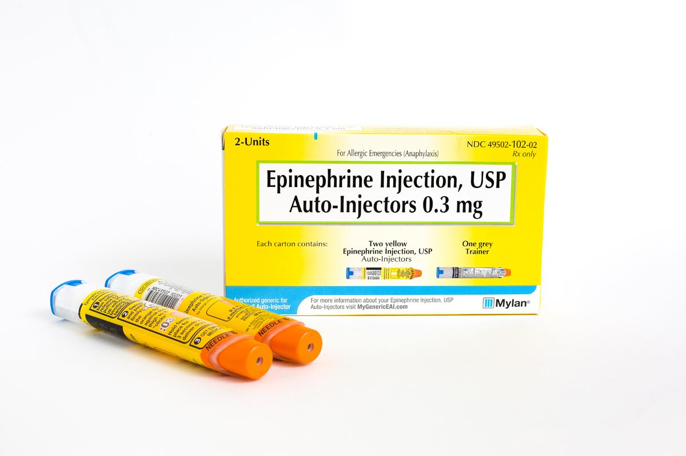

FIRST AID:
 

1) Locate and give epinephrine FIRST
2) THEN call 911
3) Call family/friends/emergency contacts
Yes, you call 911 SECOND.
This is different than treatment for other emergencies.
OTHER (optional):
- Keep track of when you started noticing symptoms and what you ate. Paramedics will ask for this information when they arrive.
- AFTER they're safe, maybe grab some comfy clothes, a blanket, a book, a charger… anything you think your person with food allergies might like to have while they wait (potentially) 4 hours being monitored at the hospital. Trust me, it’s boring (still go though lol).
About Me
I'm Samantha (Sammie) Atkins, creator of Your Last Meal. I have life-threatening food allergies to eggs, peanuts, and treenuts. I'm 21 years old, and I've had a lot of experience with allergic reactions, handling social situations with food allergies, adjusting to college, advocating for myself, etc. I created Your Last Meal as a food allergy awareness site where I could share my tips & tricks and personal stories regarding my experiences as a person with life-threatening food allergies.
The name for this site, Your Last Meal, is meant to be a dramatic, yet comical reminder for me and all people with life-threatening food allergies that if we're not careful, any meal could be our last. Hopefully the content on this webiste can help you, or give the people you love ideas on how to help you, in your efforts to stay safe.